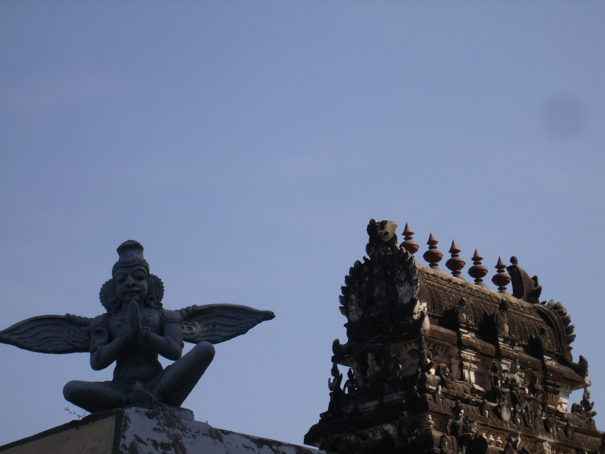

Thirukadalmallai
This temple built with other sculptures found its place on the shore. It is built specifically to safeguard the
sculptures from the eruptive waves of ocean. This temple is solely dedicated to Lord Vishnu, known here as Valavendai Gnanapiran.
This temple is also known for Adivaraha shrine that is located near the shore. Due to the reason of sole dedication to Vishnu,
this temple is also called as Sthalasayana perumal temple.
There was a interesting legend that relates to the shore of this temple. Long time ago a Sage called Pundareeka was worshipping
LordVishnu with lotus flowers. There was a belief that LordVishnu resides in the ocean. So the Sage started piling the water
from the ocean to in the intent of seeing Lord Vishnu. Pleased by the devotion of the Sage Pundareeks,Lord Vishnu arrives at
the shore disguised as a old man and asked Sage for food. By the time the Sage returned there stood the Lord Vishnu himself
wearing the lotus flowers of Sage. Pundareeka then realized that the lord himself disguised as old man to bless the devotee.